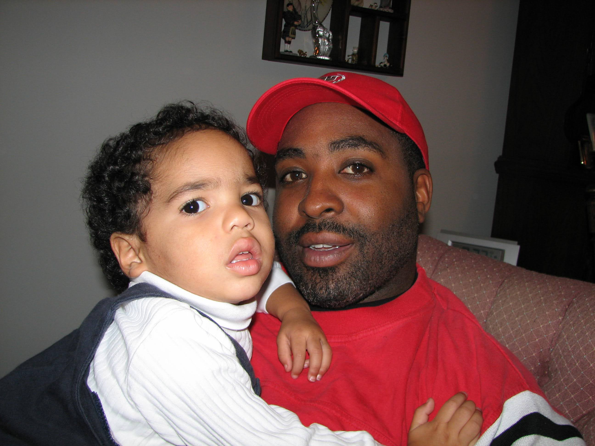

Kameron Johnson

Objective
Software Engineering Internship, Summer 2026, leveraging coursework in Computer Science & Engineering and
hands-on experience in web, mobile, and database projects.
Education
The Ohio State University, Columbus, Ohio
B.S.E Computer Science and Engineering
Specialization: Software Engineering
GPA 3.04/4.00
Expected Graduation: May 2027
Technical Skills
- Languages & Frameworks: Java, Python, JavaScript, HTML, CSS, C
- Cloud & Tools: Git/GitHub, MySQL, Figma, Eclipse
- Concepts: Object-Oriented Programming, Database Design, UI/UX, Databases and Algorthims, Run-time Analysis
Work Experience
- Resident Advisor - Drackett Tower, The Ohio State University (April 2024 - Present)
- Supervised and supported a community of 73 undergraduate residents, fostering a safe, inclusive, and
academically focused living environment.
- Planned and executed educational and social programs to strengthen community engagement and student
success
- Concession Stand Attendant
- Handled over $500 in daily sales transactions while maintaining accuracy and customer satisfaction.
- Prepared and served 100+ food items daily in a fast-paced event environment.
- Managed inventory of 30+ product types with over 600 total items to ensure consistent stock levels and efficient operations
GitHub Conact Me!